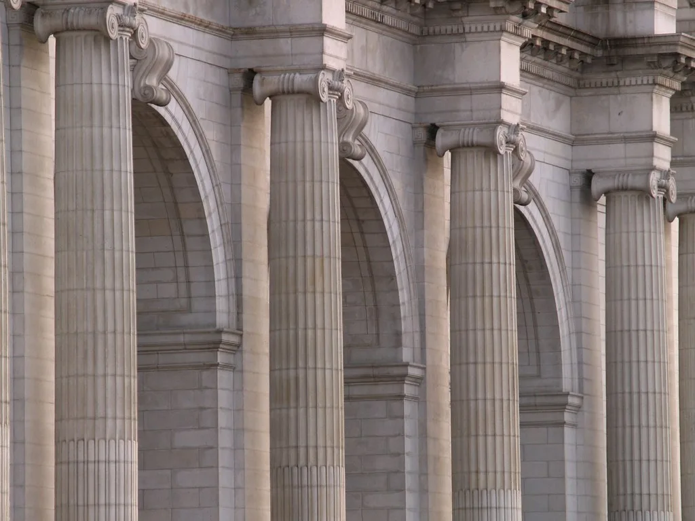

원로 법조인 잇단 집단성명…"대법관 재제청 요구 멈춰야"
대법관 후보자 인선을 둘러싼 대통령실과 대법원의 갈등이 이어지는 가운데, 법조계에서 이틀 연속 집단 성명이 나왔다. 9월 2일 사법연수원 14기 법조인 84명이 성명을 낸 데 이어, 9월 3일에는 서울대 법대 76학번 동문 27명이 대통령의 대법관 후보자 재제청 요구를 중단하라는 성명을 발표했다. 이들은 대통령과 국회, 정당이 각각 헌법이 정한 권한의 경계를 지켜야 한다고 촉구했다.
이번 논란은 조희대 대법원장이 손봉기 대구지법 부장판사 등을 대법관 후보로 제청한 데서 비롯됐다. 대통령실은 손 후보자에 대한 임명동의안을 국회에 제출하지 않기로 하고, 대법원장에게 다른 후보를 다시 제청해 달라고 요청했다. 그동안 대법원과 대통령실이 사전에 협의한 뒤 대면으로 제청해 온 관행 대신 이번에는 서면으로 제청이 이뤄진 점도 절차를 둘러싼 시비의 배경이 됐다. 대통령이 대법원장의 제청을 사실상 반려하고 재제청을 요구한 것은 전례를 찾기 어려운 일이라는 평가가 많다.
성명에 참여한 법조인들은 헌법상 대법관 임명 절차의 순서를 강조했다. 대법관은 대법원장이 제청하고 대통령이 임명하되 국회 동의를 거치는데, 대통령의 임명권은 대법원장이 제청한 사람에 대해서만 행사된다는 것이다. 이들은 "원하는 후보가 올라올 때까지 제청을 반려하면 대통령이 임명권과 제청권을 함께 행사하는 셈"이라며 삼권분립 원칙이 훼손될 수 있다고 지적했다.
법조계는 대법원장의 제청권을 축소하는 방향의 입법 시도에 대해서도 우려를 나타냈다. 이미 이뤄진 제청을 사후에 무효화하거나 특정한 인선 결과를 겨냥해 법을 바꾸는 것은 입법권 남용이라는 주장이다. 이 문제는 대법관 정원을 늘리는 방안에 대한 논의와도 맞물려 있어, 사법부 인선을 둘러싼 갈등이 장기화할 수 있다는 관측이 나온다. 성명 참여자들은 대법관 인선이 정치적 유불리에 따라 다뤄지면 재판의 독립성에 대한 국민 신뢰가 흔들릴 수 있다고 강조했다.

여당은 다른 시각을 보이고 있다. 조 대법원장이 기존 대법관후보추천위원회가 추천한 후보 가운데 한 명을 다시 제청하면 된다는 것이다. 추천위를 새로 구성할 필요는 없다는 입장으로, 여권은 대통령의 견제 권한과 사법개혁이라는 관점에서 이번 사안을 바라본다. 반면 야당은 대통령이 사법부 인사에 지나치게 개입한다며 반발하고 있어, 국회에서도 여야 간 공방이 이어질 전망이다.
조 대법원장은 재제청 요청에 대해 "자세한 내용은 검토 중이며 다음 주 중 정리가 되면 공식적으로 밝히겠다"고만 언급한 상태다. 대법원 안팎에서는 제청권을 지켜야 한다는 의견과, 국정 운영을 고려해 절충해야 한다는 의견이 함께 나오는 것으로 전해진다. 대치가 길어질수록 대법관 자리가 비는 기간이 늘어 상고심 재판 처리에 부담이 될 수 있다는 우려도 커지고 있다.
대법관 인선을 둘러싼 이번 갈등은 사법부의 독립성과 인선의 민주적 정당성이라는 두 가치가 부딪히는 지점에 놓여 있다. 법조계 성명이 특정 진영이 아니라 대통령·국회·정당 모두를 향해 자제를 요청하는 형식을 취한 것도 이런 맥락에서다. 결국 제청과 임명, 동의로 이어지는 절차를 어떻게 운영할지에 대한 사회적 합의와 신뢰 회복이 과제로 지적된다.